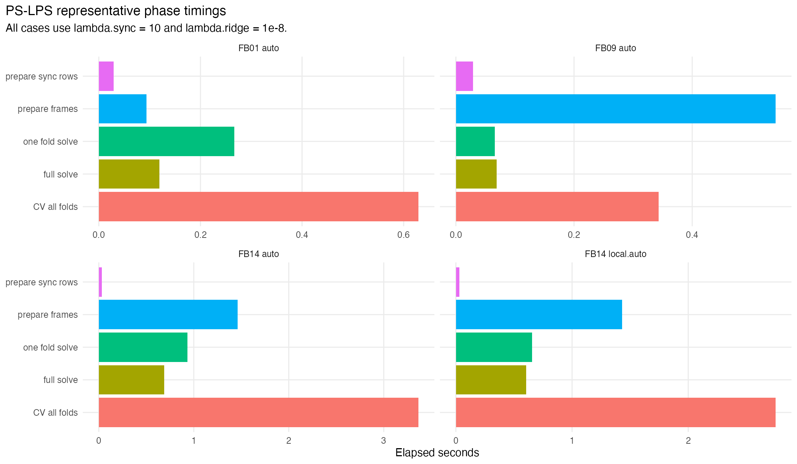
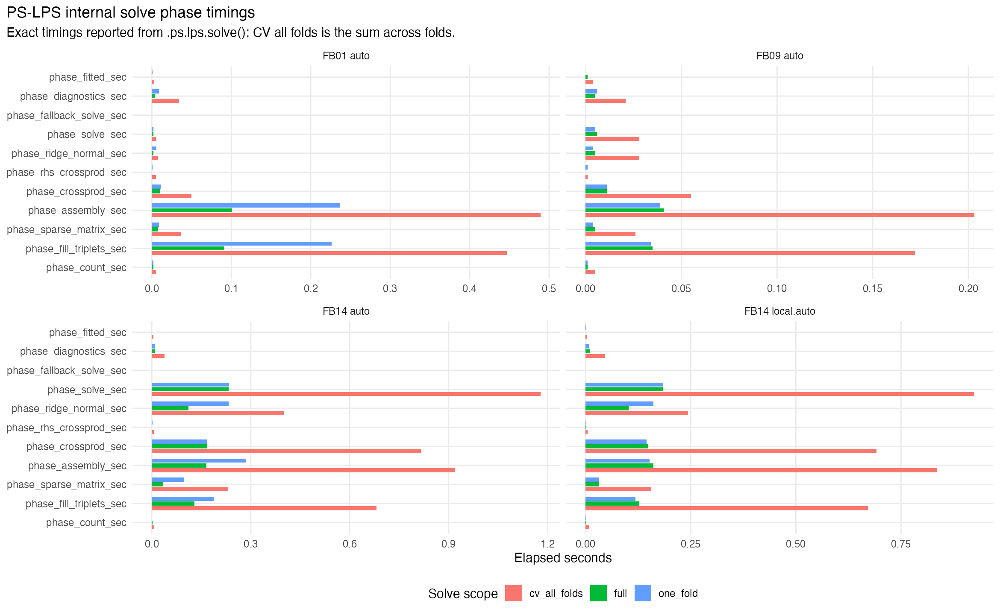
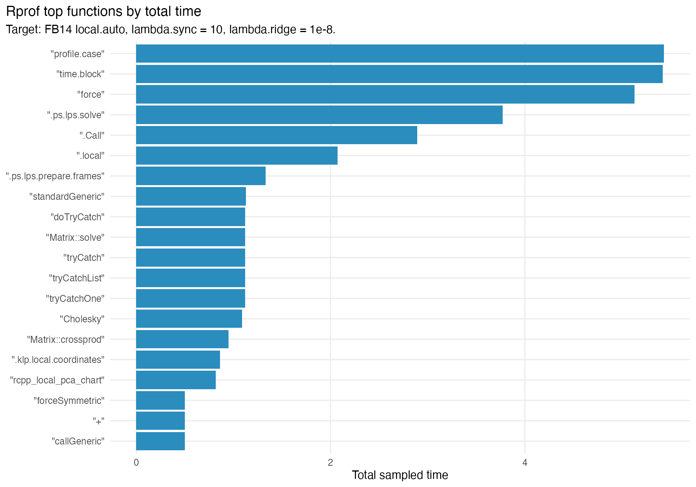

This profile uses a small set of frozen first-batch PS-LPS cases to separate setup time, synchronization-row construction, CV fold solves, and full-data solves. It is intended to guide optimization before an extended S2 synchronization search.

Representative elapsed times by phase. CV all folds is the cost paid for each candidate during tuning.
| batch_id | dataset_id | chart_dim_rule | n | p | support_size | degree | kernel | chart_dim_median | chart_dim_max | lambda_sync | lambda_ridge | phase_prepare_frames_sec | phase_prepare_sync_rows_sec | phase_one_fold_solve_sec | phase_cv_all_folds_sec | phase_full_solve_sec | phase_total_candidate_sec | n_system_rows | n_coefficients | n_sync_pairs | n_sync_rows | ridge_max |
|---|---|---|---|---|---|---|---|---|---|---|---|---|---|---|---|---|---|---|---|---|---|---|
| FB01 | LA-D1-RAW-N500 | auto | 500 | 4 | 35 | 2 | gaussian | 2 | 2 | 10 | 1e-08 | 0.094 | 0.029 | 0.267 | 0.629 | 0.119 | 0.871 | 51102 | 3000 | 1037 | 33602 | 8.78255506386762e-05 |
| FB09 | LA-13K-SUB-N500 | auto | 500 | 178 | 15 | 2 | gaussian | 3 | 3 | 10 | 1e-08 | 0.541 | 0.029 | 0.066 | 0.343 | 0.069 | 0.982 | 19269 | 5000 | 1089 | 11769 | 1.26093648246077e-05 |
| FB14 | SYN-RANK-BLOCKS-N600-P100 | auto | 600 | 100 | 35 | 2 | gaussian | 6 | 6 | 10 | 1e-08 | 1.46 | 0.03 | 0.933 | 3.365 | 0.688 | 5.543 | 55392 | 16800 | 1318 | 34392 | 0.000325566749690526 |
| FB14 | SYN-RANK-BLOCKS-N600-P100 | local.auto | 600 | 100 | 35 | 2 | gaussian | 6 | 6 | 10 | 1e-08 | 1.431 | 0.03 | 0.655 | 2.751 | 0.606 | 4.818 | 55392 | 15065 | 1318 | 34392 | 0.000325566749690526 |

Breakdown from inside .ps.lps.solve(): row counting, triplet fill, sparse matrix construction, A'A crossproduct, A'y crossproduct, ridge-normal formation, sparse solve, fallback solve, diagnostics, and fitted-value extraction.
| batch_id | dataset_id | chart_dim_rule | scope | phase | elapsed_sec | case |
|---|---|---|---|---|---|---|
| FB01 | LA-D1-RAW-N500 | auto | one_fold | phase_count_sec | 0.002 | FB01 auto |
| FB01 | LA-D1-RAW-N500 | auto | one_fold | phase_fill_triplets_sec | 0.226 | FB01 auto |
| FB01 | LA-D1-RAW-N500 | auto | one_fold | phase_sparse_matrix_sec | 0.009 | FB01 auto |
| FB01 | LA-D1-RAW-N500 | auto | one_fold | phase_assembly_sec | 0.237 | FB01 auto |
| FB01 | LA-D1-RAW-N500 | auto | one_fold | phase_crossprod_sec | 0.011 | FB01 auto |
| FB01 | LA-D1-RAW-N500 | auto | one_fold | phase_rhs_crossprod_sec | 0.001 | FB01 auto |
| FB01 | LA-D1-RAW-N500 | auto | one_fold | phase_ridge_normal_sec | 0.006 | FB01 auto |
| FB01 | LA-D1-RAW-N500 | auto | one_fold | phase_solve_sec | 0.002 | FB01 auto |
| FB01 | LA-D1-RAW-N500 | auto | one_fold | phase_fallback_solve_sec | 0 | FB01 auto |
| FB01 | LA-D1-RAW-N500 | auto | one_fold | phase_diagnostics_sec | 0.009 | FB01 auto |
| FB01 | LA-D1-RAW-N500 | auto | one_fold | phase_fitted_sec | 0.001 | FB01 auto |
| FB01 | LA-D1-RAW-N500 | auto | cv_all_folds | phase_assembly_sec | 0.489 | FB01 auto |
| FB01 | LA-D1-RAW-N500 | auto | cv_all_folds | phase_count_sec | 0.005 | FB01 auto |
| FB01 | LA-D1-RAW-N500 | auto | cv_all_folds | phase_crossprod_sec | 0.05 | FB01 auto |
| FB01 | LA-D1-RAW-N500 | auto | cv_all_folds | phase_diagnostics_sec | 0.034 | FB01 auto |
| FB01 | LA-D1-RAW-N500 | auto | cv_all_folds | phase_fallback_solve_sec | 0 | FB01 auto |
| FB01 | LA-D1-RAW-N500 | auto | cv_all_folds | phase_fill_triplets_sec | 0.447 | FB01 auto |
| FB01 | LA-D1-RAW-N500 | auto | cv_all_folds | phase_fitted_sec | 0.003 | FB01 auto |
| FB01 | LA-D1-RAW-N500 | auto | cv_all_folds | phase_rhs_crossprod_sec | 0.005 | FB01 auto |
| FB01 | LA-D1-RAW-N500 | auto | cv_all_folds | phase_ridge_normal_sec | 0.008 | FB01 auto |
| FB01 | LA-D1-RAW-N500 | auto | cv_all_folds | phase_solve_sec | 0.005 | FB01 auto |
| FB01 | LA-D1-RAW-N500 | auto | cv_all_folds | phase_sparse_matrix_sec | 0.037 | FB01 auto |
| FB01 | LA-D1-RAW-N500 | auto | full | phase_count_sec | 0.002 | FB01 auto |
| FB01 | LA-D1-RAW-N500 | auto | full | phase_fill_triplets_sec | 0.091 | FB01 auto |
| FB01 | LA-D1-RAW-N500 | auto | full | phase_sparse_matrix_sec | 0.008 | FB01 auto |
| FB01 | LA-D1-RAW-N500 | auto | full | phase_assembly_sec | 0.101 | FB01 auto |
| FB01 | LA-D1-RAW-N500 | auto | full | phase_crossprod_sec | 0.01 | FB01 auto |
| FB01 | LA-D1-RAW-N500 | auto | full | phase_rhs_crossprod_sec | 0 | FB01 auto |
| FB01 | LA-D1-RAW-N500 | auto | full | phase_ridge_normal_sec | 0.002 | FB01 auto |
| FB01 | LA-D1-RAW-N500 | auto | full | phase_solve_sec | 0.002 | FB01 auto |
| FB01 | LA-D1-RAW-N500 | auto | full | phase_fallback_solve_sec | 0 | FB01 auto |
| FB01 | LA-D1-RAW-N500 | auto | full | phase_diagnostics_sec | 0.004 | FB01 auto |
| FB01 | LA-D1-RAW-N500 | auto | full | phase_fitted_sec | 0 | FB01 auto |
| FB09 | LA-13K-SUB-N500 | auto | one_fold | phase_count_sec | 0.001 | FB09 auto |
| FB09 | LA-13K-SUB-N500 | auto | one_fold | phase_fill_triplets_sec | 0.034 | FB09 auto |
| FB09 | LA-13K-SUB-N500 | auto | one_fold | phase_sparse_matrix_sec | 0.004 | FB09 auto |
| FB09 | LA-13K-SUB-N500 | auto | one_fold | phase_assembly_sec | 0.039 | FB09 auto |
| FB09 | LA-13K-SUB-N500 | auto | one_fold | phase_crossprod_sec | 0.011 | FB09 auto |
| FB09 | LA-13K-SUB-N500 | auto | one_fold | phase_rhs_crossprod_sec | 0.001 | FB09 auto |
| FB09 | LA-13K-SUB-N500 | auto | one_fold | phase_ridge_normal_sec | 0.004 | FB09 auto |
| FB09 | LA-13K-SUB-N500 | auto | one_fold | phase_solve_sec | 0.005 | FB09 auto |
| FB09 | LA-13K-SUB-N500 | auto | one_fold | phase_fallback_solve_sec | 0 | FB09 auto |
| FB09 | LA-13K-SUB-N500 | auto | one_fold | phase_diagnostics_sec | 0.006 | FB09 auto |
| FB09 | LA-13K-SUB-N500 | auto | one_fold | phase_fitted_sec | 0 | FB09 auto |
| FB09 | LA-13K-SUB-N500 | auto | cv_all_folds | phase_assembly_sec | 0.203 | FB09 auto |
| FB09 | LA-13K-SUB-N500 | auto | cv_all_folds | phase_count_sec | 0.005 | FB09 auto |
| FB09 | LA-13K-SUB-N500 | auto | cv_all_folds | phase_crossprod_sec | 0.055 | FB09 auto |
| FB09 | LA-13K-SUB-N500 | auto | cv_all_folds | phase_diagnostics_sec | 0.021 | FB09 auto |
| FB09 | LA-13K-SUB-N500 | auto | cv_all_folds | phase_fallback_solve_sec | 0 | FB09 auto |
| FB09 | LA-13K-SUB-N500 | auto | cv_all_folds | phase_fill_triplets_sec | 0.172 | FB09 auto |
| FB09 | LA-13K-SUB-N500 | auto | cv_all_folds | phase_fitted_sec | 0.004 | FB09 auto |
| FB09 | LA-13K-SUB-N500 | auto | cv_all_folds | phase_rhs_crossprod_sec | 0.001 | FB09 auto |
| FB09 | LA-13K-SUB-N500 | auto | cv_all_folds | phase_ridge_normal_sec | 0.028 | FB09 auto |
| FB09 | LA-13K-SUB-N500 | auto | cv_all_folds | phase_solve_sec | 0.028 | FB09 auto |
| FB09 | LA-13K-SUB-N500 | auto | cv_all_folds | phase_sparse_matrix_sec | 0.026 | FB09 auto |
| FB09 | LA-13K-SUB-N500 | auto | full | phase_count_sec | 0.001 | FB09 auto |
| FB09 | LA-13K-SUB-N500 | auto | full | phase_fill_triplets_sec | 0.035 | FB09 auto |
| FB09 | LA-13K-SUB-N500 | auto | full | phase_sparse_matrix_sec | 0.005 | FB09 auto |
| FB09 | LA-13K-SUB-N500 | auto | full | phase_assembly_sec | 0.041 | FB09 auto |
| FB09 | LA-13K-SUB-N500 | auto | full | phase_crossprod_sec | 0.011 | FB09 auto |
| FB09 | LA-13K-SUB-N500 | auto | full | phase_rhs_crossprod_sec | 0 | FB09 auto |
| FB09 | LA-13K-SUB-N500 | auto | full | phase_ridge_normal_sec | 0.005 | FB09 auto |
| FB09 | LA-13K-SUB-N500 | auto | full | phase_solve_sec | 0.006 | FB09 auto |
| FB09 | LA-13K-SUB-N500 | auto | full | phase_fallback_solve_sec | 0 | FB09 auto |
| FB09 | LA-13K-SUB-N500 | auto | full | phase_diagnostics_sec | 0.005 | FB09 auto |
| FB09 | LA-13K-SUB-N500 | auto | full | phase_fitted_sec | 0.001 | FB09 auto |
| FB14 | SYN-RANK-BLOCKS-N600-P100 | auto | one_fold | phase_count_sec | 0.001 | FB14 auto |
| FB14 | SYN-RANK-BLOCKS-N600-P100 | auto | one_fold | phase_fill_triplets_sec | 0.187 | FB14 auto |
| FB14 | SYN-RANK-BLOCKS-N600-P100 | auto | one_fold | phase_sparse_matrix_sec | 0.098 | FB14 auto |
| FB14 | SYN-RANK-BLOCKS-N600-P100 | auto | one_fold | phase_assembly_sec | 0.286 | FB14 auto |
| FB14 | SYN-RANK-BLOCKS-N600-P100 | auto | one_fold | phase_crossprod_sec | 0.167 | FB14 auto |
| FB14 | SYN-RANK-BLOCKS-N600-P100 | auto | one_fold | phase_rhs_crossprod_sec | 0.002 | FB14 auto |
| FB14 | SYN-RANK-BLOCKS-N600-P100 | auto | one_fold | phase_ridge_normal_sec | 0.233 | FB14 auto |
| FB14 | SYN-RANK-BLOCKS-N600-P100 | auto | one_fold | phase_solve_sec | 0.234 | FB14 auto |
| FB14 | SYN-RANK-BLOCKS-N600-P100 | auto | one_fold | phase_fallback_solve_sec | 0 | FB14 auto |
| FB14 | SYN-RANK-BLOCKS-N600-P100 | auto | one_fold | phase_diagnostics_sec | 0.009 | FB14 auto |
| FB14 | SYN-RANK-BLOCKS-N600-P100 | auto | one_fold | phase_fitted_sec | 0.001 | FB14 auto |
| FB14 | SYN-RANK-BLOCKS-N600-P100 | auto | cv_all_folds | phase_assembly_sec | 0.919 | FB14 auto |
| FB14 | SYN-RANK-BLOCKS-N600-P100 | auto | cv_all_folds | phase_count_sec | 0.007 | FB14 auto |
| FB14 | SYN-RANK-BLOCKS-N600-P100 | auto | cv_all_folds | phase_crossprod_sec | 0.816 | FB14 auto |

Top sampled functions by total time for the heaviest representative profile target.
| function_name | total.time | total.pct | self.time | self.pct |
|---|---|---|---|---|
| "profile.case" | 5.43 | 100 | 0 | 0 |
| "time.block" | 5.42 | 99.82 | 0 | 0 |
| "force" | 5.13 | 94.48 | 0 | 0 |
| ".ps.lps.solve" | 3.77 | 69.43 | 0.7 | 12.89 |
| ".Call" | 2.89 | 53.22 | 2.89 | 53.22 |
| ".local" | 2.07 | 38.12 | 0 | 0 |
| ".ps.lps.prepare.frames" | 1.33 | 24.49 | 0 | 0 |
| "standardGeneric" | 1.13 | 20.81 | 0 | 0 |
| "doTryCatch" | 1.12 | 20.63 | 0 | 0 |
| "Matrix::solve" | 1.12 | 20.63 | 0 | 0 |
| "tryCatch" | 1.12 | 20.63 | 0 | 0 |
| "tryCatchList" | 1.12 | 20.63 | 0 | 0 |
| "tryCatchOne" | 1.12 | 20.63 | 0 | 0 |
| "Cholesky" | 1.09 | 20.07 | 0 | 0 |
| "Matrix::crossprod" | 0.95 | 17.5 | 0 | 0 |
| ".klp.local.coordinates" | 0.86 | 15.84 | 0 | 0 |
| "rcpp_local_pca_chart" | 0.82 | 15.1 | 0 | 0 |
| "forceSymmetric" | 0.5 | 9.21 | 0.13 | 2.39 |
| "+" | 0.5 | 9.21 | 0 | 0 |
| "callGeneric" | 0.5 | 9.21 | 0 | 0 |